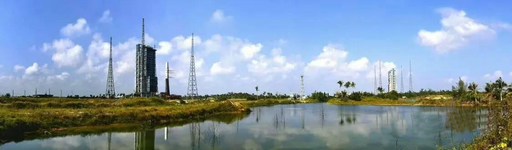
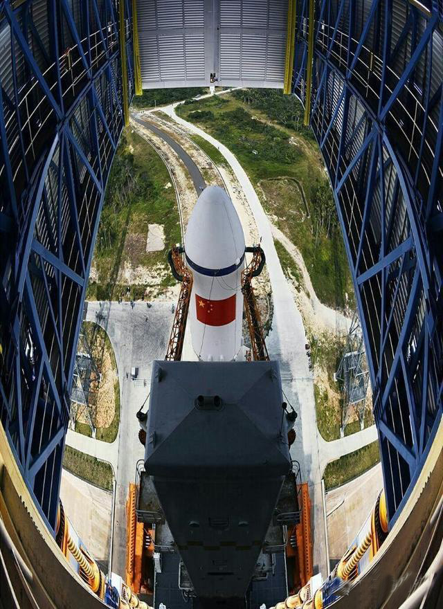

2020年5月19日
文昌卫星发射中心
文昌卫星发射中心是我国继酒泉、太原、西昌之后第四个卫星发射中心。 文昌卫星发射中心位于中国海南省文昌市附近，前身为中国发射亚轨道火箭的测试基地， 后经国务院、中央军委批准在该地建设中国首个滨海发射基地。建设工程于2009年9月14日正式开工， 2014年10月中旬基本竣工。

对外开放史上最高
与其他三个发射场都建在偏远的地方不同，文昌发射场真的是名副其实的就建在文昌龙楼镇。 更何况海南本就是中国重点打造的国际化旅游城市，把卫星发射中心放在这里可谓是非常的高调， 也看出国家也是越发的开放了。
